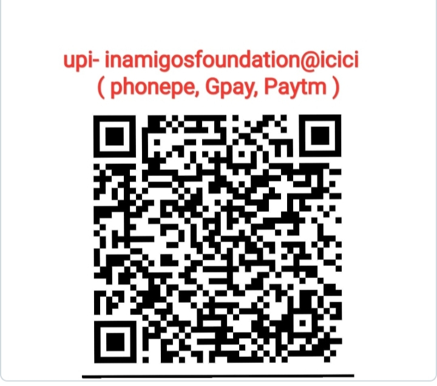
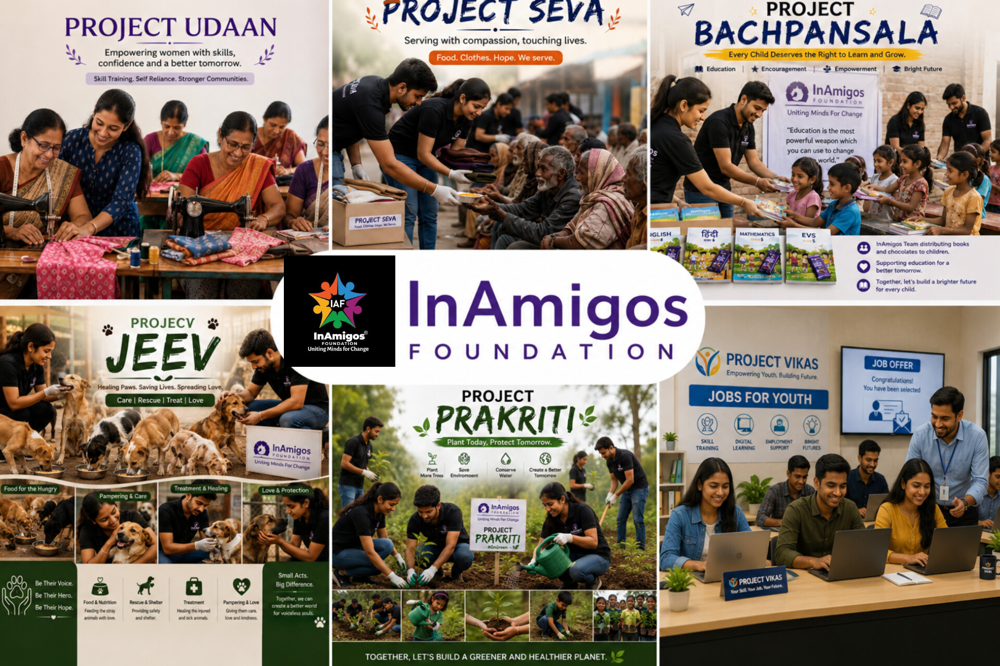
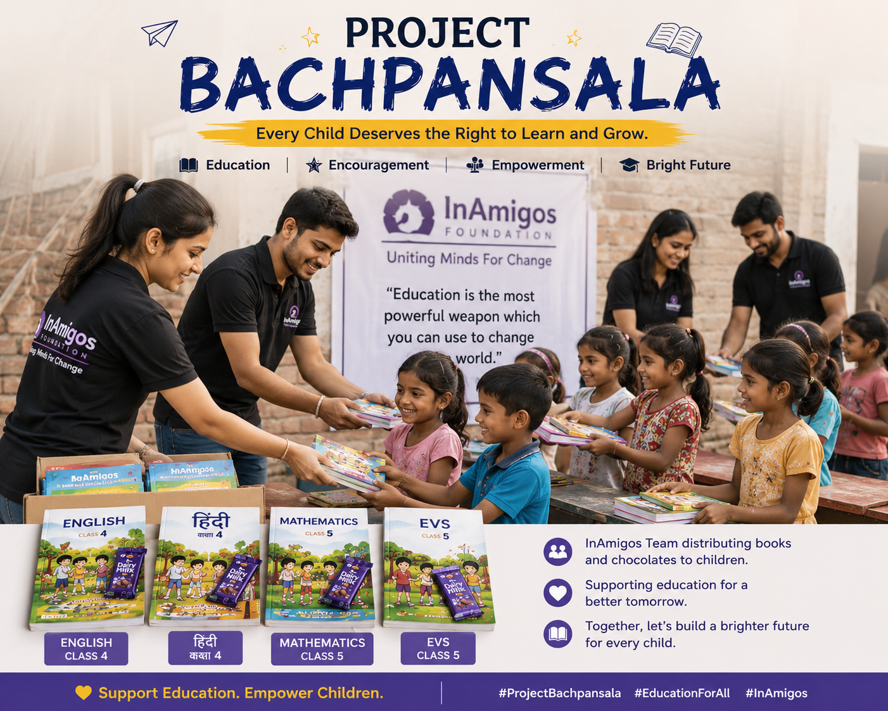

Scan the QR code below to support our cause and Please Share the Screenshot to honor to the donation. 🙏🏻

Every contribution helps us create real change.
InAmigos Foundation is a Section 8 registered non-profit organization working towards creating an inclusive, compassionate, and sustainable society. Through education, women empowerment, environmental conservation, animal welfare, and community support, we are building a better tomorrow — one act of kindness at a time. Join hands with us and be a part of this beautiful journey of change. 💙

ABOUT INAMIGOS FOUNDATION
InAmigos Foundation was founded on September 23, 2020, with a simple yet powerful idea — to bring people together and create positive, lasting change in society. What started as a small group of passionate individuals has now grown into a thriving community-driven movement, reaching thousands of lives across India.
The foundation was established by our Founder & CEO, Govind Shukla, who envisioned an organization that goes beyond charity — one that empowers people to become self-reliant, builds awareness, and creates sustainable solutions for real-world problems. Under his guidance, InAmigos Foundation has grown into a Section 8 registered non-profit organization dedicated to creating social impact through education, women empowerment, environmental sustainability, animal welfare, and community development.
To create an inclusive, compassionate, and sustainable society where every individual — regardless of background — has access to education, opportunity, and dignity. We envision a world where communities support each other, the environment is protected, and every voice matters.
Our mission is to empower lives through education, skill development, welfare programs, and community engagement. We strive to uplift underprivileged children, empower women, protect animals, restore the environment, and build stronger, kinder communities through consistent, on-ground action.
🌟 Our Goal: Uniting Minds for A Change 🌟
✨ Over 250 interns have joined our organization permanently, and together we continue to grow as one big family working towards a shared dream of change. 😊
OUR ONGOING PROJECTS

Project Seva is at the heart of our humanitarian work, dedicated to helping those in need with food, clothes, and other essentials. From distributing warm meals to families struggling to make ends meet, to handing out clothes during winter drives, Seva ensures that no one in our community has to face hardship alone. Every packet of food and every piece of clothing shared through Seva carries a message of hope and humanity.

Project Bachpanshala is built on the belief that every child deserves a chance to learn, dream, and grow. Through this initiative, we provide quality education and care to underprivileged children who otherwise have little or no access to schooling. Bachpanshala goes beyond textbooks — it nurtures confidence, curiosity, and a love for learning, laying the foundation for a brighter future for the next generation.

Project Jeev is our heartfelt effort towards supporting and rescuing animals in need. Whether it's feeding stray animals, rescuing injured ones, or providing them with care and shelter, Jeev reflects our commitment to a kinder world for every living being. Through regular feeding drives and rescue operations, this project reminds us that compassion knows no species.

Project Udaan is dedicated to empowering women with skills, confidence, and opportunities to become financially independent. Through skill-development workshops and training programs, Udaan helps women discover their potential and take flight towards a more secure and dignified future — for themselves and their families. Every woman we empower becomes a source of strength for her entire community.

Project Prakriti is our promise to Mother Earth. Through clean-up drives, tree plantation campaigns, and environmental awareness programs, we work towards protecting and restoring our natural surroundings. Every tree planted under Prakriti is a step towards a greener, healthier, and more sustainable future for generations to come.

Project Vikas focuses on helping youth like you grow through internships and skill-building opportunities. By bridging the gap between education and employment, Vikas equips young minds with real-world experience, professional skills, and the confidence to shape their own careers — empowering the next generation to become changemakers themselves.
OUR IMPACT SO FAR
Through Project Bachpanshala, we have supported the education of thousands of underprivileged children, providing them with learning materials, mentorship, and a safe space to grow — helping them build the knowledge and confidence needed for a brighter future.
Project Udaan has empowered 900+ women with skill-development training and opportunities for financial independence, helping them build stronger, more confident lives for themselves and their families.
Under Project Prakriti, our volunteers have planted over 20,000+ trees across various locations, contributing to a greener environment and a more sustainable future for our planet.
Through Project Jeev, our team has rescued and provided food and care to hundreds of animals, ensuring that every living being receives the compassion and support it deserves.
Project Seva has carried out numerous welfare drives, distributing over 50,000+ meals and clothing items to families in need — standing strong with our communities during their toughest times.
Every donation made to InAmigos Foundation goes directly towards our on-ground projects — from meals and education kits to plantation drives and animal care. 100% transparency is our promise, and every rupee donated truly reaches the people, animals, and causes that need it most.
SEE OUR WORK IN ACTION
Certified as TOP-5 NGO 🏆
Education Support Drive - Project Bachpanshala 📚
Food Distribution – Project Seva 🍚
Tree Plantation – Project Prakriti 🌱
Women Empowerment – Project Udaan 👩
Animal Rescue – Project Jeev 🐶
GET INVOLVED
Whether you volunteer, donate or spread awareness, your support can create meaningful change in countless lives.
Join our team and contribute your time and skills.
Your donation can bring hope and create impact.
Spread the word and inspire others to join us.
Participate in our campaigns and community drives.